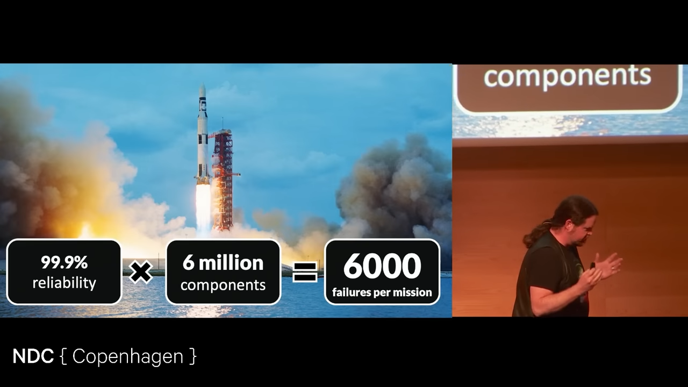
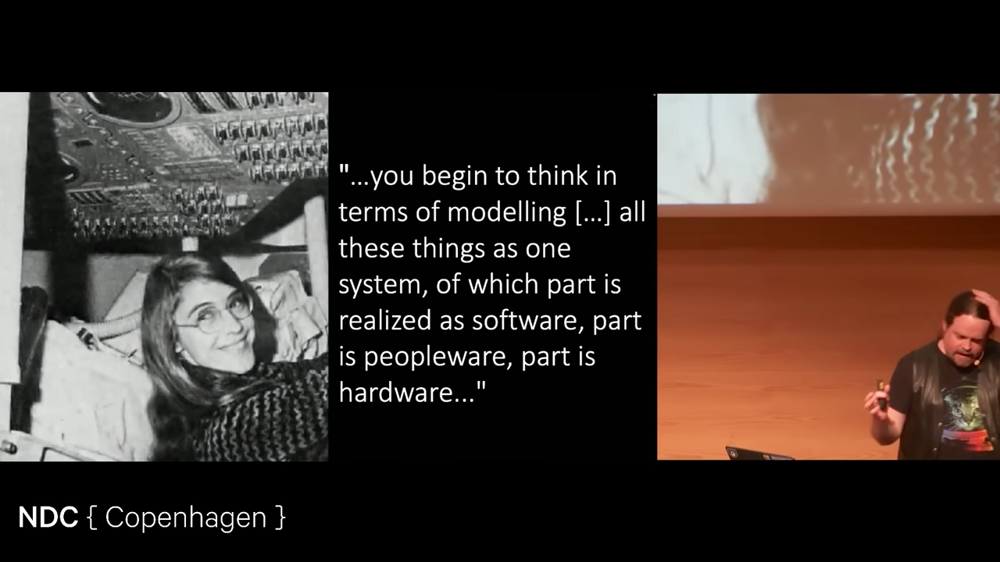
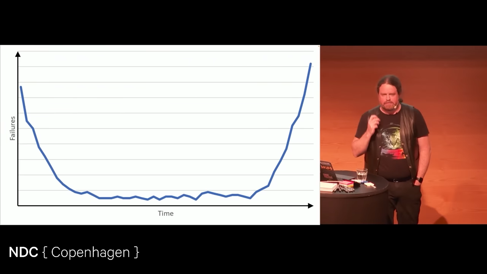

Failure is Always an Option - Dylan Beattie - NDC Conference
Table of Contents
1. Saturn Rocket
0:05:06 At 99.9% reliability but with 6 million components meant 6000 failures per mission. 
2. System Thinking
0:05:19 Margaret hamilton - System Thinking

you begin to think in terms of modelling […] all these things as one system, of which part is realized as software, part is peopleware, part is hardware…
- Margaret Hamilton
0:09:40 System's thiking is looking at every component and asking, if this doesn't work does the whole thing work? If not, better put a backup for that.
- 0:34:53 Tesla car got confused because a truck was carrying traffic light on its trailer.
- There was a cross region setup for a web service that would be reliable even if one of the datacenter went down. But it didn't work one day because the limit on the credit card for cloud provider exceeded.
Thus high reliability requires system thinking.
3. Bathtub curve
A curve of failures of a system over time.

Three kinds of defects:
- Early life cycle defects
- faulty parts (in Mechanical Thing)
- edge cases missed (for software)
- Random Defects
- End of Life defects
- parts wear out (Mechanical Thing)
- support/maintainence is left (for Software)
4. Feynman's comment on Challenger Disaster
0:21:03
There was are Space shuttle weather launch criteria but it had no criteria for miniumum temperature allowed for launch.
- Once they launched at 13 degree celsius
- Then next time at 10
- Then at 3. But the rubber gaskets fails, the rocket explodes, and 7 astronauts are dead.
Richard Feynman was on the committe for the investigation of the disaster he said:
We have also found that certification criteria used in Flight Readiness Reviews often develop a gradually decreasing strictness. The argument that the same risk was flown before without failure is often accepted as an argument for the safety of accepting it again.